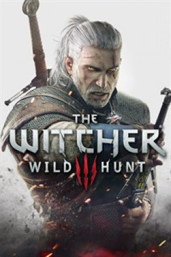

The Witcher 3 |
||
|---|---|---|
|  | Sinopsis: El mundo está en llamas: el Imperio de Nilfgaard se adentra en el corazón de los Reinos del Norte. Geralt de Rivia está siendo perseguido por un enemigo que no conoce la piedad: la Cacería salvaje, una mítica cuadrilla de jinetes espectrales, portadores de la destrucción y la muerte, capaz de destruir ciudades enteras de la noche a la mañana. Geralt, que tendrá sus propios intereses, deberá atravesar un laberinto de enemigos para encontrar y proteger a la persona descrita en una antigua profecía. El jugador se adentrará en un mundo sombrío y despiadado, que fijará nuevos estándares por su tamaño, por la complejidad de su ecosistema y por su evolución no lineal. El jugador podrá disfrutar de realistas ciclos de día y noche, disfrutar de los cambios climatológicos (y del impacto que tienen en el sistema de juego) y conquistar esos detallados entornos que plasman a la perfección el legado de la franquicia. |
Desarrollador:CD Projekt RED Plataformas: Microsoft Windows, PlayStation 4,Xbox One, Nintendo Switch Año: 2015 Duracion:60 horas aprox Pais:Polonia |
Criticas Profesionales:Alvaro CastellanoThe Witcher III no es perfecto, pero es uno de los RPGs más fastuosos y recomendables de los últimos tiempos. El ansiado salto al mundo abierto ha sentado muy bien a la franquicia y los problemas tienen que ver con un control impreciso, un combate algo plano o problemas técnicos ingentes... Esos factores provocan que tengamos un juego algo áspero pero palidecen ante una historia maravillosa y una capacidad de alterar su mundo que nos mantendrá, literalmente, atrapados horas y horas. Uno de esos casos donde lo bueno prevalece sobre lo malo con muchísima diferencia. |
Trailer |
Obtener:AlquilarComprar |
Registrate/Iniciar Sesion